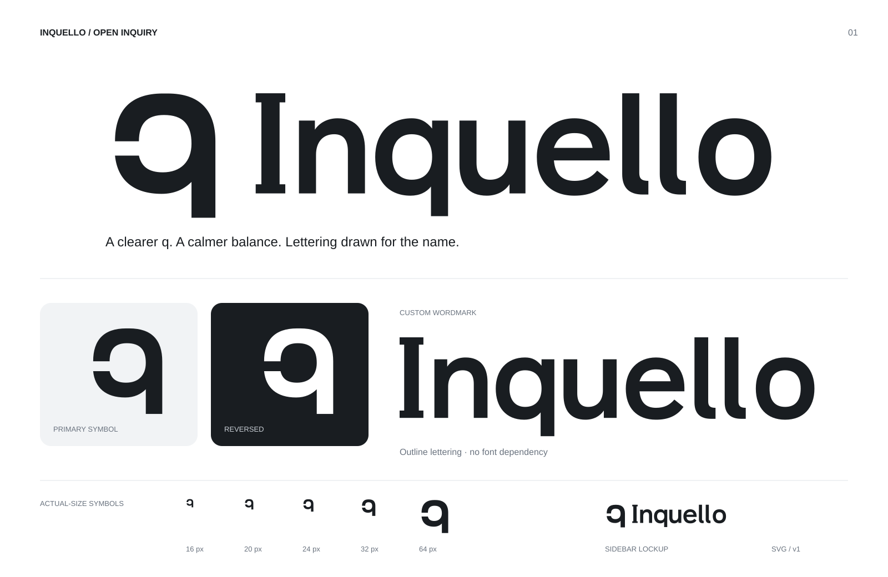
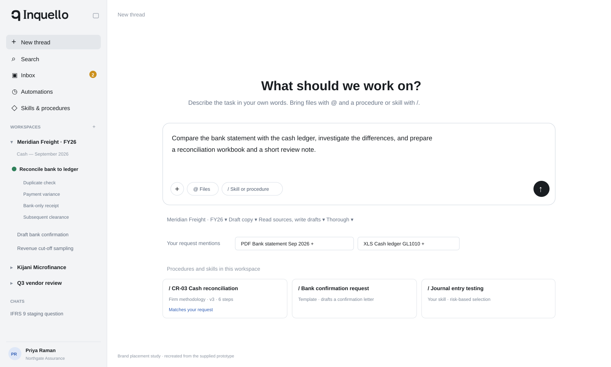
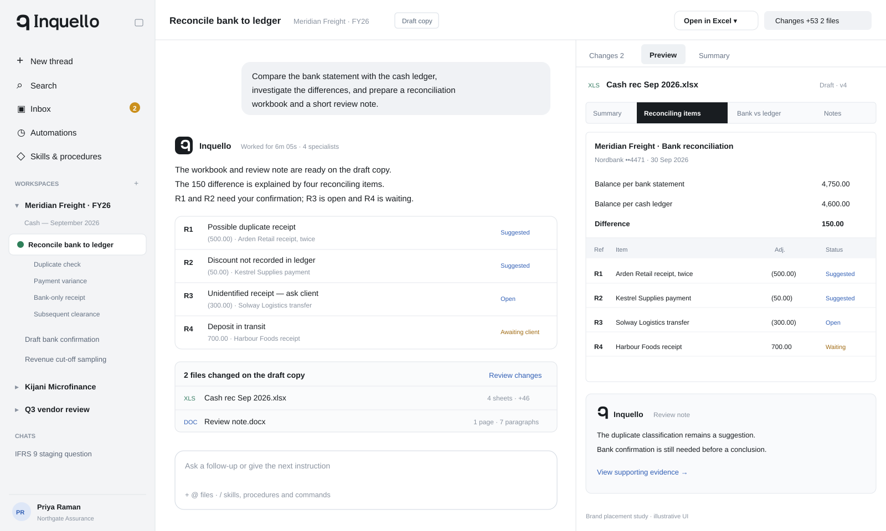

One opening. A clearer identity.
The selected A direction, refined with a connected q bowl, balanced symbol-to-name proportions and custom outlined lettering. Use these assets to compare directly with Claude’s interpretation.

The standalone symbol keeps its open left edge. Its lower bowl now joins the descender. The capital I has short bars, the double l has subtle feet, and the wordmark’s q stays closed for readability.
Start — sidebar lockup

Active work — sidebar and assistant identity

These are illustrative recreations based on your supplied screenshots, not edits to the Claude prototype. Sample content serves only to show the branding at realistic interface sizes.
Native pixel-size checks
View at 100% browser zoom. The 16px and 20px exports have a slightly wider opening. Sizes below refer to image height.
16px20px24px32px64px
App icon
Download the master artwork
All brand masters use vector geometry with no embedded images, scripts or font dependencies. UI labels in the preview illustrations use system fonts.